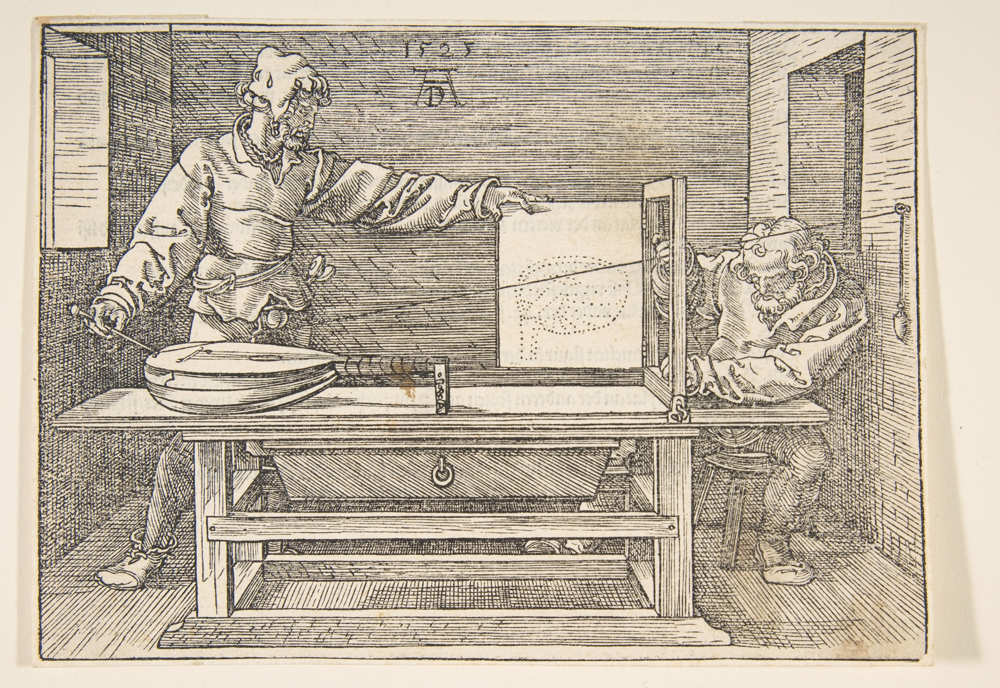

A three-part reassessment of Renaissance techniques for modern digital synthesis. This series bridges the gap between historical perspectival geometry and the contemporary ray tracing pipeline.
Part 1
Computational Methods of Perspectival Geometry
Focuses on Dürer's drawing apparatus and the logic of intersection.
A respecification of Renaissance techniques for digital synthesis.
The problem that computer graphics aims to solve is how to accurately project three-dimensional (3D) objects onto a two-dimensional (2D) screen. While several computational techniques address this challenge, ray tracing algorithms are particularly noteworthy because they not only solve this problem but also attempt to capture realistic lighting effects.
Ray tracing and its variants belong to a family of algorithms used in rendering photorealistic scenes in animated movies and video games by simulating the underlying physics of light. By simplifying light to a geometric ray, it becomes computationally manageable, allowing computer scientists to develop algorithms that can virtually trace these rays as straight lines, determine which objects they hit on their paths, and calculate where to show shadows, reflections, and other lighting effects based upon that. These lighting effects are crucial for rendering the details of virtual scenes that help human observers perceive depth, dimension, colour, and other physical properties of nature in digitally rendered virtual objects, resulting in a kind of quantified, machine-elaborated chiaroscuro.
As success depends on what ‘makes sense’ perceptually to a human observer, at times, instead of modelling what is physically accurate, computer scientists focus on what is visually appealing by incorporating both qualitative and quantitative factors into their work. In their quest for photorealism, computer scientists explicitly acknowledge and orient to the human observer in perceptual setups, defining “photorealistic rendering” as the task of generating images that are indistinguishable from a photograph or that evoke the same response from a human observer as looking at the actual scene. What ‘makes sense’ perceptually is not a fixed target but a constantly negotiated one.
Sportello - Dürer's Drawing Apparatus
This problem of projection is not new. Building on the foundational contributions of Renaissance scholars to linear perspective and the stabilisation of chiaroscuro techniques in engineering and scientific practice, German Renaissance artist Albrecht Dürer became famous for setting out what was involved in the geometrical measurements for the perspective drawing of objects pictorially. To understand how such visual phenomena are translated into a computational problem, we must first look at the apparatus that made these perspectival rules tangible.
In his 1525 book A Course in the Art of Measurement with a Compass and Ruler, Dürer provided formalised instructions for drawing as tutorial resources for aspiring art students.

Fig. 1:Underweysung der Messung mit dem Zirckel und Richtscheyt (A Course in the Art of Measurement with a Compass and Ruler, 1525). Draftsman Drawing a Lute.
He describes his method of perspectival geometry as follows:
“If you are in a large chamber, hammer a large needle with a wide eye into the wall. It will denote the near point of sight. Then, thread it with a strong thread, weighted with a piece of lead. Now place a table as far from the needle as you wish and place a vertical frame on it, parallel to the wall to which the needle is attached, but as high or low as you wish, and on whatever side you wish. This frame should have a door hinged to it which will serve as your tablet for painting. Now nail two threads to the top and middle of the frame. These should be as long, respectively, as the frame's width and length, and they should be left hanging. Next, prepare a long iron pointer with a needle's eye at its other end, and attach it to the long thread which leads through the needle that is attached to the wall. Hand this pointer to another person, while you attend to the threads which are attached to the frame. Now proceed as follows. Place a lute or another object to your liking as far from the frame as you wish, but so that it will not move while you are using it. Have your assistant then move the pointer from point to point on the lute, and as often as he rests in one place and stretches the long thread, move the two threads attached to the frame crosswise and in straight lines to confine the long thread. Then stick their ends with wax to the frame, and ask your assistant to relax the tension of the long thread. Next close the door of the frame and mark the spot where the threads cross on the tablet. After this, open the door again and continue with another point, moving from point to point until the entire lute has been scanned and its points have been transferred to the tablet. Then connect all the points on the tablet and you will see the result. You can use this method for drawing other things. I have drawn this device below.”
1
2
3
4
5
6
7
8
1
The Wall Needle A large needle with a wide eye hammered into the wall. It denotes the near point of sight.
2
The Long Thread A strong thread which leads through the wall needle and stretches to the iron pointer.
3
The Lead Weight A piece of lead that weights the strong thread to keep it stretched.
4
The Vertical Frame A vertical frame placed on a table parallel to the wall.
5
The Door Tablet A door hinged to the frame which serves as your tablet for painting. It is closed to mark the spot where the threads cross.
6
The Cross Threads Two threads nailed to the frame, moved crosswise and in straight lines to confine the long thread.
7
The Iron Pointer A long iron pointer with a needle's eye, attached to the long thread and moved from point to point on the object.
8
The Subject (Lute) A lute or another object to your liking, placed so that it will not move while you are using it.
Fig. 2:Components of Dürer's Perspective Apparatus.
In this method, a draughtsman uses “a strong thread” hammered into the wall to create “the near point of sight” and places a vertical frame parallel to the wall. Then “a lute or other object to your liking” is placed on the opposite end of the table. The near point of sight is placed on parts of the lute, and strings are attached with hot wax to the frame to mark where the near point of sight passes through the frame. The points that the crossed strings denote are then marked on the “drawing tablet,” creating an accurate dotted outline for the lute.
Step 1: Move the Iron Pointer to a point on the Subject and stretch the Long Thread.
Step 2: Move the Cross Threads crosswise to confine the Long Thread against the Vertical Frame.
Step 3: Close the Drawing Page and mark the point where the Cross Threads intersect.
Step 4: Open the Page and repeat for each point on the subject.
Fig. 3:Step-by-step Walkthrough of the Drawing Process.
By connecting the dots on the tablet, a draughtsman can produce a perspective drawing of the object. Hofmann (1990) draws a parallel between Dürer’s method of perspective drawing and ray tracing in computer graphics by comparing the draughtsman’s thread with a light ray. Through that, he argues that those plotted dots on the “drawing tablet” are samples of the pictured object.
Click on any point on the subject to draw it on the tablet. Continue adding points to see the outline of your image emerge. You can also click the play button to animate the entire process.
Fig. 4:Interactive 3D Simulation of Dürer's Apparatus.
The questions arise: how do we trace such threads (or rays) from the object to a computer screen? In what sense does it make sense to say that tracing rays is equivalent to “sampling the objects”? To understand the logical purpose such arguments play in practice, we must walk through how this physical geometry is methodically respecified.
Respecifying Dürer for the Digital Screen
If we want to model Dürer’s instructions for drawing on a computer, the “objects”, the “thread”, the “grid”, and so on need to be programmed in a way that the computer can execute. Dürer showed us that for perspective drawing, we needed a “drawing tablet,” “a near point of sight,” “a strong thread,” and so on. His pointer can move freely over the object because the thread passes through the needle that is 'hammered into the wall'. That needle acts as the 'near point of sight'—the fixed point from which the perspective is being drawn.
Ray tracing replaces the physical components of Dürer's device with their computational counterparts. The wall needle becomes a virtual Camera, the wooden frame becomes a Digital Image Plane (a 16x16 pixel grid), and the lighting is simulated by light sources like this Bulb. This abstraction allows for the simulation of complex light interactions that were impossible with the physical model.
Fig. 5:Computational Counterpart: Annotated View.
Similarly, in computer graphics, the ‘camera’ is a fixed point from which rays can be traced. The frame or hinged door becomes the "image plane"—acting as a window onto the scene. Just as the draughtsman scans the lute point by point through the grid of the frame, the ray tracing algorithm imagines our window onto the scene divided into smaller squares (pixels). The more squares we add, the greater number of rays we can trace from the camera to the scene. By tracing rays through all the pixels on the image plane and computing the colour of those pixels based on the geometric and material properties of the points these rays intersect in the scene, a 2D projection of the 3D scene can be rendered.
However, for ease of computation, these rays are traced in reverse order: from the camera to the object to the light, rather than the way light “travels” in physical scenes from light sources to objects to the camera. Since, in geometrical optics, light rays are treated as if they travel in straight lines, tracing them in reverse does not alter their paths. Moreover, in a physical scene, most of the light rays will never end up hitting the camera. Thus, by starting its path from the camera we can ensure it ends in a light, avoiding unnecessary computation of rays that do not contribute to the final image.
The Problem of Perspective: Rasterization vs. Ray Tracing
When we look through a window, we see the neighbouring buildings appear larger than the distant hills, even though we know the hills are significantly larger. This illustrates the problem of perspective. In computer graphics, scenes are drawn artificially based on the geometric and material properties of different objects present within the scene. They are drawn from a single perspective, where the image plane acts as a reference plane through which rays are traced.
Traditionally, computer scientists have solved this projection problem using a technique known as rasterization, where the 'Z axis' values of objects are compared to see which appears first. Although this method significantly reduces compute time, it is not physically accurate. What ray tracing does differently is that it traces rays from camera to the scene and calculates colours of pixels based on the way rays physically interact with the objects present within the scene. The algorithm determines the order of objects by drawing rays from the camera to check which surface this ray intersects with first. This surface could be on an object, a light source, or the camera itself.
Shadows, Bounces, and Managing Constraints
Even if our ray hits a point on the surface of an object, it does not guarantee that it will be visible from the perspective of the camera. The point will only be visible if we can draw another imaginary line from it to the light source. If there is another object between the point and the light source, we will not be able to complete the path of our ray, and the point is considered to be in shadow.
To solve this, the algorithm uses a new tool that has no physical counterpart: the 'shadow ray'. This is not a simulation of a real phenomenon, but a computational probe. It is a question posed in the language of the algorithm itself: “Can a new ray, originating at this point of intersection, reach the light source without being blocked?”.
Furthermore, the colour of a point depends not only on whether it is visible from the light source directly but also on whether it is visible indirectly via reflections and ambient light. When a ray hits a surface, the algorithm computes the reflected direction and traces a new ray along this reflected direction.
However, as we have limited computing capacity, we need to define how many times we allow a ray to reflect within the scene. This practical constraint illustrates that theoretical ideals, such as an infinitely reflecting ray, have limits to their practical realisation.
In nature, a light ray's path is effectively infinite, bouncing between surfaces until its energy dissipates. A computer program, however, cannot simulate such infinitude. We will see in the later parts how practitioners make a theoretical issue like the "infinite details" of a physical phenomenon computationally tractable through different programming techniques, preventing infinite loops by bounding the number of times a ray can bounce. In this context, these programming decisions become the computational equivalent of a stop sign based on what would be considered 'enough'. It is a necessary compromise, an admission that the simulation is not the phenomenon itself, but a bounded, finite and practically purposeful inquiry into its behaviour.
Direct Illumination Once a ray hits a surface in the scene, the algorithm checks for ‘direct illumination’ by seeing if the point can be connected to a light source with a straight line. If there is no object between that point and the light source, the ray completes its path, and the corresponding pixel is painted.
Indirect Illumination The colour of a point depends not only on whether it is visible from the light source directly but also on whether it is visible indirectly. For ‘indirect illumination,’ when a ray hits a surface, the algorithm computes the reflected direction and traces a new ray along this reflected direction. This process continues—tracing new rays each time it hits a surface—constructing a path of multiple bounces before it finally reaches the light source.
Shadows Even if our ray hits a point on the surface of an object, it does not guarantee that it will be illuminated. To solve this, the algorithm uses a new tool that has no physical counterpart: the 'shadow ray'. This is a computational probe asking: “Can a new ray, originating at this point of intersection, reach the light source without being blocked?”. If there is another object between the point and the light source, we will not be able to complete the path of our ray. The point is considered to be in shadow, and the pixel is painted with a default shadow colour.
Fig. 6:Computational Counterpart: The Recursive Path.
Conclusion: From Geometry to Photorealism
By slowing down the analysis to focus on these constitutive details, we make the work of respecification tangible. Dürer's physical apparatus—a historical, mechanical practice—is methodically respecified into a computational one. The “thread” became a “ray”, the “drawing frame” became an “image plane”, and the physical act of plotting points became the logic of "sampling". This translation demonstrates how visual phenomena are broken down into formal, instructable parts that a computer can execute.
Ultimately, the logic of tracing rays in reverse, the introduction of non-physical shadow rays, and the bounding of infinite bounces reveal the artful craft of managing practical constraints. However, projecting geometry onto a screen is only the foundational step. To truly trick the human eye, we must understand how light itself behaves.
In the next part, we will explore how disparate techniques from algebra, geometry, optics, statistics, and simulation modelling are woven together to render a physically accurate scene. More importantly, we will question what physical "accuracy" actually means in this computationally constrained environment, how such a thing can be measured, and how the pursuit of "photorealism" is ultimately a negotiated, pragmatic achievement rather than a perfect mirror of physical reality.